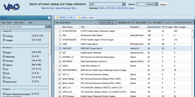
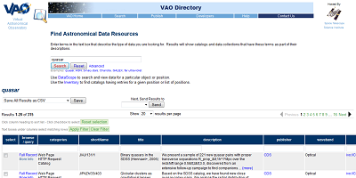

VAO projects at STScI
Space Telescope Science Institute is a participant in the Virtual Astronomical Observatory collaborative effort. Currently, two major VAO projects are developed and hosted at STScI, namely the Search Portal, and an IVOA Registry with advanced search capabilities.
|  |  |